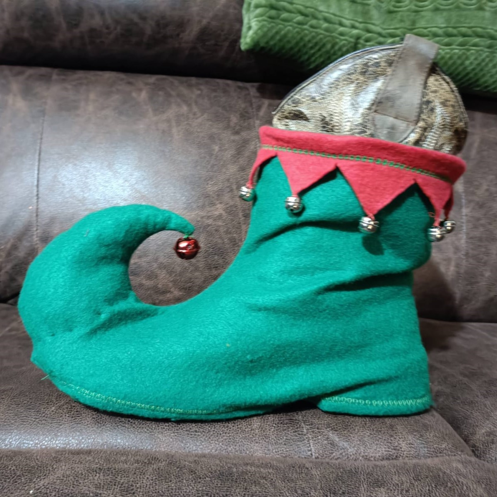

Hola mi nombre es Valeria Chavez, tengo 22 años, soy estudiante de ingenieria, pero me gusta pensar en que puedo ser cualquier cosa que me proponga, es por eso que a veces soy costurera, algunas otras veces me dedico a ser lectora, y si me siento un poco loca e inspirada, juego a ser escritora, pero además de esto, me gusta hacer proyectros de macramé, tejer cosas basicas, me gusta mucho pescar, aventurera por naturaleza, entre un sin fin de cosas más, así que en esta pagina WEB podras encontrar un poco de todo.
Costuras
En tiempo de pandemia descubri una vieja máquina de coser en mi cuarto, no funcionaba, así que decidí repararla, y fue así que empexo mi aventura con la costura. Al tener tiempo libre, y una máquina que no sabia usar, comence a experimentar, obviamente cometia errores, jamas habia intentado coser algo, muchas cosas las tuve que googlear, como por ejemplo, como enebrar mi vieja máquina, algunas veces estuve a punto de coser mi propio dedo, pero tranquilas, no sucedio.
Conforme más experimentaba, más me gustaba probar cosas nuevas, así comenzaron mis pequeñas creaciones, entre ellas hubo cosas como:
- Diademas
- Fundas para almohadas
- Cortinas
- Ropa para las muñecas de mi prima
- Disfraces
- Gorros navideños
- Arreglos a la ropa de mi familia

Y fue de esta manera que comence mis creaciones, primero cosas pequeñas, despues fui aumentando las dificultades, ahora soy capaz de elaborar prendas mucho más complejas.
Macramé
El macramé es uno de mis pasatiempos preferidos, mis primeros pasos en este arte fueron la elaboracion de pulseras, mi papá me enseño el nudo más basico y más utilizado en el macramé, el nudo plano, de ahí comence a ver las diversas cosas que se pueden elaborar, y en ellas se aplicaban otros nudos que no conocia, pero que con practica, logre llevar a cabo, hasta lograr la mayoria a la perfección. Hata ahora no he hecho piezas tan elaboradas de macramé, pero de igual manera les mostrare lo que he realizado.

Mi historia
Desde muy pequeña me han gustado todo tipo de aventuras, y mis papás siempre nos llevaban a hacer muchas actividades divertidas, entre ellas la pesca.
La pesca es uno de mis deportes favoritos, mi papá nos enseño a pescar a mi hermano y ami cuando teniamos 5-7 años, recuerdo que algunas veces acababamos con su paciencia, entre mi hermano que no sabia como tirar el anzuelo, y yo que ya me habia encajado el anzuelo en el cuello, era todo un panorama gracioso, claro, para mi papá era un completo estres, pero jamas se rindio con nosotros, y es así como continuamos con este maravilloso deporte, cada vez invertimos un poco más en nuestros equipos de pesca, acabamos que comenzar a pescar el kayak, lo cual es una experiencia super diferente y entretenida.
Así que en esta sección quisiera mostrarte un poco de los nudos más eficaces para poner tu anzuelo, algunas presas a las que he ido, carnadas que uso, y un sin fin de cosas más.
Nudos
Los son la base de una pesca exitosa, pues de ellos depende si tienes un pez o no, por ejemplo, cuando mi papá nos dijo que era momento de que nosotros hicieramos nuestros propios nudos, empezaron los problemas. Muchas de las veces mis nudos eran un completo desastre, otras veces hacia nudos tan malos que a la minima tensión que se pusiera en el sedal, perdia mi anzuelo, otras pocas veces por tomar mal el anzuelo mientras hacia los nudos, terminaba lastimandome con dichos anzuelos, en fin, habia muchos inconvenientes, es por eso que he decidido dejarte unos cuantos viedos, con nudos faciles y funcionales.
Estos 2 nudos son mis favoritos, el primero es el mñas basico, con el cual la mayoria iniciamos, el segundo es el que uso actualmente, un poquito más complejo, pero a mi parecer, mas resistente, y mas rapido de realizar cuando ya tienes un poco más de practica.
Lugares para pescar
A continuacion te dejo una pequeña lista de las presas/lagunas a las que he ido a pescar, y te cuento un poquito de mi experiencia en ellas.
- Presa los Mimbres
- - Es una presa que se encuentra en General Teran, Nuevo León, tiene un tamaño mediano, en ella puedes encontrar lobinas, carpas, bagres, tilapias, mojaras, estas siendo las especies más abundantes, sin embargo hay otras especies en menor cantidad. Es una presa profunda, perfecta para pescar en lancha, kayaks o desde orilla, sin duda es una de las presas que más visito.
- Presa de la Boca
- - Esta presa se localiza en Santiago, Nuevo León, actualmente esta en decadencia, por la temporada de sequia perdio mucha agua, ademas de ser una de las presas que le proporciona servicios de agua a Monterrey, eso provoco que su nivel bajara muchisimo, sin embargo eso aun no impide que sea un excelente lugar de pesca, en dicha presa encuentras mayormente lobinas y carpas, y ultimamente presenta un gran crecimiento en la tan temida plaga de peces diablo.
- Laguna de Labradores
- - Esta laguna sin duda alguna es mi lugar favorito para pescar, el paisaje es hermoso, el agua es cristalina, puedes ver como pasan los peces por debajo de ti cuando estas en el kayak, es como estar en un videojuego, en esta presa hay solo carpas y lobinas, las carpas las puedes traer para tu consumo, pero la lobina debe regresar al agua, solamente es pesca deportiva. Ademas solo se puede pescar desde orilla y con kayak, no se perimten lanchas, o cualquier transporte con motor, para así evitar la contaminación